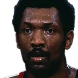

McCoy McLemore
1964-65 to 1971-72 · Career Map
San Francisco,  Chicago,
Chicago,  Phoenix,
Phoenix,  Detroit,
Detroit,  Cleveland,
Cleveland,  Milwaukee,
Milwaukee,  Houston
Houston
His teams won one title, with the 1970-71 Milwaukee Bucks. In his 580 games for 7 teams over 8 seasons they went 213–367 (36.7%), −154 games under .500, with an average final finish of 10.4.
Jump to: Record by opponent · Season by season · Teammate help
Compare McCoy McLemore with…
Suggested, same era and similar teammate help:
Final NBA finish, season by season
Title Finals Other playoffs Missed playoffs. #1 = champion; the dashed line is last place that season. Each point opens that season's final standings.
All 9 teams ranked in 1965-66, his best finish (#7)Teammate help
 Rick Barry5.81 season
Rick Barry5.81 season Wilt Chamberlain4.01 season
Wilt Chamberlain4.01 season Dave DeBusschere4.01 season
Dave DeBusschere4.01 season
Career
Career records (W–L, W − L, with and without) include 2026-27 games through Nov. 18, 2026; season counts and finishes are through 2025-26. Each card opens its board in the same scope. How we count.

Latest completed seasons
Season by season
Newest first; every header sorts. Final NBA finish is the team's rank among all teams that season (#1 = champion) and opens that season's standings. "Without him" uses the team-season window; the span line counts only the games between his first and last game for the team.
| 1971-72 | #3 of 17 | 63–19 76.8% | Lost conf finals 2–4 | 10 of 82 | 9–1 90.0% | 15–3 83.3%span: 3–0, gap −10.0 | +6.7 | |
| 1971-72 | #11 of 17 | 34–48 41.5% | Missed playoffs | 17 of 82 | 8–9 47.1% | 24–26 48.0%span: 5–3, gap −15.4 | −0.9 | |
| 1970-71 | #17 of 17 | 15–67 18.3% | Missed playoffs | 58 of 82 | 10–48 17.2% | 1–0 100.0%span: N/A, gap N/A | −82.8 | |
| 1970-71 | #1 of 17 | 66–16 80.5% | Title 4–0 BLT | 28 of 82 | 22–6 78.6% | 0–1 0.0%span: N/A, gap N/A | +78.6 | |
| 1969-70 | #12 of 14 | 31–51 37.8% | Missed playoffs | 73 of 82 | 27–46 37.0% | 4–5 44.4%span: 4–5, gap −7.5 | −7.5 | |
| 1968-69 | #14 of 14 | 16–66 19.5% | Missed playoffs | 31 of 82 | 7–24 22.6% | N/A | N/A | |
| 1968-69 | #11 of 14 | 32–50 39.0% | Missed playoffs | 50 of 82 | 20–30 40.0% | 2–2 50.0%span: 2–2, gap −10.0 | −10.0 | |
| 1967-68 | #8 of 12 | 29–53 35.4% | Lost conf semis 1–4 | 76 of 82 | 27–49 35.5% | 2–4 33.3%span: 2–4, gap +2.2 | +2.2 | |
| 1966-67 | #8 of 10 | 33–48 40.7% | Lost conf semis 0–3 STL | 79 of 81 | 32–47 40.5% | 1–1 50.0%span: 1–1, gap −9.5 | −9.5 | |
| 1965-66 | San Francisco4th Western | #7 of 9 | 35–45 43.8% | Missed playoffs | 80 of 80 | 35–45 43.8% | N/A | N/A |
| 1964-65 | San Francisco5th Western | #9 of 9 | 17–63 21.2% | Missed playoffs | 78 of 80 | 16–62 20.5% | 1–1 50.0%span: 1–1, gap −29.5 | −29.5 |
Teammate help by season
Two separate numbers per season, each with every teammate that adds to it. Help this season = Teammates Score points for honors won that season by teammates who shared a game with him. Help coming in = the same teammates' honors from the season before. How help works.
- 1971-72
 Milwaukee
Milwaukee
Help this season: 12 = 11 Kareem Abdul-Jabbar + 1 Oscar Robertson
 Kareem Abdul-Jabbar MVPAll-NBA 1stAll-Star1110 g
Kareem Abdul-Jabbar MVPAll-NBA 1stAll-Star1110 g Oscar Robertson All-Star110 g
Oscar Robertson All-Star110 g
More: help coming in and other teammates
Help coming in (teammates' honors the season before): 25.5 = 21.5 Kareem Abdul-Jabbar + 4 Oscar Robertson
Other teammates (no honors that season): Jeff Webb 10 g, Greg Smith 10 g, Jon McGlocklin 10 g, Toby Kimball 10 g, Bob Dandridge 10 g, John Block 10 g, Lucius Allen 10 g, Bill Dinwiddie 9 g, Barry Nelson 4 g
- 1971-72
 Houston
Houston
Help this season: 1 = 1 Elvin Hayes

Elvin Hayes All-Star117 gMore: help coming in and other teammates
Help coming in (teammates' honors the season before): 1.25 = 1 Elvin Hayes + 0.25 Calvin Murphy
Other teammates (no honors that season): Greg Smith 17 g, Mike Newlin 17 g, Calvin Murphy 17 g, Cliff Meely 17 g, Stu Lantz 17 g, Rudy Tomjanovich 16 g, Dick Gibbs 13 g, John Vallely 11 g, Dick Cunningham 10 g, Johnny Egan 7 g
- 1970-71
 Cleveland
Cleveland
Help this season: 1 = 1 John Johnson
John Johnson All-Star156 gMore: help coming in and other teammates
Help coming in (teammates' honors the season before): 0
Other teammates (no honors that season): Walt Wesley 58 g, John Warren 58 g, Bingo Smith 58 g, Bobby Lewis 56 g, Dave Sorenson 55 g, Luther Rackley 50 g, Joe Cooke 50 g, Gary Suiter 28 g, Larry Mikan 28 g, Johnny Egan 26 g, Bobby Washington 23 g, Cliff Anderson 23 g, Len Chappell 6 g
- 1970-71Milwaukee
Help this season: 25.5 = 21.5 Kareem Abdul-Jabbar + 4 Oscar Robertson
Kareem Abdul-Jabbar MVPFinals MVPAll-NBA 1stAll-StarAll-Def 2nd21.528 gOscar Robertson All-NBA 2ndAll-Star428 g
More: help coming in and other teammates
Help coming in (teammates' honors the season before): 10 = 5.25 Kareem Abdul-Jabbar + 4.5 Oscar Robertson + 0.25 Bob Dandridge
Other teammates (no honors that season): Greg Smith 28 g, Jon McGlocklin 28 g, Dick Cunningham 28 g, Bob Boozer 27 g, Jeff Webb 26 g, Bob Dandridge 25 g, Bill Zopf 11 g, Lucius Allen 7 g, Marv Winkler 3 g, Bob Greacen 2 g
- 1969-70
 Detroit
Detroit
Help this season: 1 = 1 Jimmy Walker
Jimmy Walker All-Star172 gMore: help coming in and other teammates
Help coming in (teammates' honors the season before): 1.25 = 1 Dave Bing + 0.25 Bill Hewitt
Other teammates (no honors that season): Howard Komives 73 g, Otto Moore 72 g, Terry Dischinger 67 g, Erwin Mueller 65 g, Dave Bing 61 g, Walt Bellamy 53 g, Eddie Miles 41 g, Bill Hewitt 38 g, Paul Long 23 g, Happy Hairston 15 g, Bob Quick 13 g, Steve Mix 13 g, George Reynolds 10 g, Tom Workman 2 g
- 1968-69
 Phoenix
Phoenix
Help this season: 2.25 = 1 Gail Goodrich + 1 Dick Van Arsdale + 0.25 Gary Gregor
Gail Goodrich All-Star131 gDick Van Arsdale All-Star131 gGary Gregor All-Rookie 1st0.2530 gMore: help coming in and other teammates
Help coming in (teammates' honors the season before): 0
Other teammates (no honors that season): Stan McKenzie 31 g, Dick Snyder 30 g, Neil Johnson 30 g, George Wilson 27 g, Dave Lattin 22 g, Bob Warlick 17 g, Rodney Knowles 8 g, Eddie Biedenbach 7 g
- 1968-69Detroit
Help this season: 5 = 4 Dave DeBusschere + 1 Dave Bing
Dave DeBusschere All-NBA 2ndAll-Def 1st41 g Dave Bing All-Star146 g
Dave Bing All-Star146 g
More: help coming in and other teammates
Help coming in (teammates' honors the season before): 6 = 5 Dave Bing + 1 Dave DeBusschere
Other teammates (no honors that season): Eddie Miles 50 g, Happy Hairston 50 g, Howard Komives 49 g, Walt Bellamy 49 g, Terry Dischinger 48 g, Otto Moore 43 g, Jimmy Walker 37 g, Dave Gambee 22 g, Bud Olsen 9 g, Sonny Dove 8 g, Rich Niemann 3 g
- 1967-68
 Chicago
Chicago
Help this season: 1 = 1 Bob Boozer
Bob Boozer All-Star171 gMore: help coming in and other teammates
Help coming in (teammates' honors the season before): 2.25 = 1 Jerry Sloan + 1 Guy Rodgers + 0.25 Erwin Mueller
Other teammates (no honors that season): Jim Washington 76 g, Keith Erickson 72 g, Barry Clemens 72 g, Jerry Sloan 71 g, Clem Haskins 70 g, Flynn Robinson 67 g, Dave Schellhase 39 g, Jim Barnes 36 g, Erwin Mueller 33 g, Reggie Harding 12 g, Craig Spitzer 10 g, Guy Rodgers 4 g, Ken Wilburn 2 g, Jim Burns 2 g
- 1966-67Chicago
Help this season: 2.25 = 1 Guy Rodgers + 1 Jerry Sloan + 0.25 Erwin Mueller
Guy Rodgers All-Star179 gJerry Sloan All-Star178 gErwin Mueller All-Rookie 1st0.2578 gMore: help coming in and other teammates
Help coming in (teammates' honors the season before): 1 = 1 Guy Rodgers
Other teammates (no honors that season): Bob Boozer 78 g, Don Kojis 76 g, Jim Washington 75 g, Keith Erickson 73 g, Gerry Ward 72 g, Barry Clemens 59 g, George Wilson 40 g, Dave Schellhase 30 g, Len Chappell 19 g, Nate Bowman 8 g
- 1965-66San Francisco
Help this season: 8 = 5.75 Rick Barry + 1 Guy Rodgers + 1 Nate Thurmond + 0.25 Fred Hetzel
Rick Barry All-NBA 1stAll-StarROYAll-Rookie 1st5.7580 gGuy Rodgers All-Star179 g Nate Thurmond All-Star173 gFred Hetzel All-Rookie 1st0.2556 g
Nate Thurmond All-Star173 gFred Hetzel All-Rookie 1st0.2556 g
More: help coming in and other teammates
Help coming in (teammates' honors the season before): 1 = 1 Nate Thurmond
Other teammates (no honors that season): Tom Meschery 80 g, Al Attles 79 g, Gary Phillips 67 g, Paul Neumann 66 g, Keith Erickson 64 g, Bud Olsen 55 g, Will Frazier 2 g
- 1964-65San Francisco
Help this season: 5 = 4 Wilt Chamberlain + 1 Nate Thurmond
Wilt Chamberlain All-NBA 2ndAll-Star436 gNate Thurmond All-Star175 g
More: help coming in and other teammates
Help coming in (teammates' honors the season before): 6.25 = 5 Wilt Chamberlain + 1 Guy Rodgers + 0.25 Nate Thurmond
Other teammates (no honors that season): Guy Rodgers 77 g, Tom Meschery 77 g, Gary Phillips 71 g, Al Attles 71 g, Bud Koper 54 g, Wayne Hightower 46 g, Paul Neumann 36 g, Barry Kramer 32 g, Connie Dierking 30 g, John Rudometkin 22 g, Cotton Nash 20 g, George Lee 18 g, Gary Hill 9 g
Record against each opponent
- Best regular-season record against one franchise: 23–22 (51.1%) against the Detroit Pistons in 45 games.
- Toughest regular-season record against one franchise: 11–42 (20.8%) against the Boston Celtics in 53 games.
- Most playoff series against one franchise: 2 against the Los Angeles Lakers, 1–1 in series and 4–5 in games.
Regular season, through 2025-26 (2026-27 games not included): 580 games, 213–367, against 17 franchises.
Grouped by franchise (named as today); game lists keep each team's name that season. Filters and the tab are kept in the URL, so a filtered view can be shared.
| Games list | |||||||
|---|---|---|---|---|---|---|---|
| 56 | 19–37 | 33.9% | −18 | 1–1 (4–5 in games) | 1964-65 to 1971-72 | ||
| 55 | 17–38 | 30.9% | −21 | N/A | 1964-65 to 1971-72 | ||
| 54 | 14–40 | 25.9% | −26 | N/A | 1964-65 to 1971-72 | ||
| 53 | 13–40 | 24.5% | −27 | 0–1 (0–3 in games) | 1964-65 to 1971-72 | ||
| 53 | 11–42 | 20.8% | −31 | N/A | 1964-65 to 1971-72 | ||
| 52 | 22–30 | 42.3% | −8 | N/A | 1964-65 to 1970-71 | ||
| 52 | 22–30 | 42.3% | −8 | 1–0 (3–0 in games) | 1964-65 to 1971-72 | ||
| 45 | 23–22 | 51.1% | +1 | N/A | 1964-65 to 1971-72 | ||
| 35 | 13–22 | 37.1% | −9 | 1–0 (3–0 in games) | 1966-67 to 1971-72 | ||
| 27 | 13–14 | 48.1% | −1 | N/A | 1967-68 to 1971-72 | ||
| 23 | 10–13 | 43.5% | −3 | N/A | 1967-68 to 1970-71 | ||
| 18 | 8–10 | 44.4% | −2 | N/A | 1968-69 to 1971-72 | ||
| 16 | 9–7 | 56.2% | +2 | N/A | 1968-69 to 1971-72 | ||
| 15 | 2–13 | 13.3% | −11 | N/A | 1968-69 to 1970-71 | ||
| 12 | 9–3 | 75.0% | +6 | N/A | 1970-71 to 1971-72 | ||
| 11 | 5–6 | 45.5% | −1 | N/A | 1970-71 to 1971-72 | ||
| 3 | 3–0 | 100.0% | +3 | N/A | 1971-72 |
Rows add up to his career record in his games. A playoff series counts when he played in it; early round-robin games show as games only. How we count.
Playoffs, with and without him
Arrival and departure
Team wins per 82 games the season before he arrived vs his first season there, and his last season vs the season after he left. Per 82 so short seasons compare fairly. These are team records, not a measure of what he did.
| Left | 1972-73 | 1971-72: 63–19 63.0 per 82 | 1972-73: 60–22 60.0 per 82 | −3.0 wins | |
| Left | 1972-73 | 1971-72: 34–48 34.0 per 82 | 1972-73: 33–49 33.0 per 82 | −1.0 wins | |
| Arrived | 1971-72 | 1970-71: 40–42 40.0 per 82 | 1971-72: 34–48 34.0 per 82 | −6.0 wins | |
| Left | 1971-72 | 1970-71: 15–67 15.0 per 82 | 1971-72: 23–59 23.0 per 82 | +8.0 wins | |
| Arrived | 1970-71 | 1969-70: 56–26 56.0 per 82 | 1970-71: 66–16 66.0 per 82 | +10.0 wins | |
| Left | 1970-71 | 1969-70: 31–51 31.0 per 82 | 1970-71: 45–37 45.0 per 82 | +14.0 wins | |
| Left | 1969-70 | 1968-69: 16–66 16.0 per 82 | 1969-70: 39–43 39.0 per 82 | +23.0 wins | |
| Arrived | 1968-69 | 1967-68: 40–42 40.0 per 82 | 1968-69: 32–50 32.0 per 82 | −8.0 wins | |
| Left | 1968-69 | 1967-68: 29–53 29.0 per 82 | 1968-69: 33–49 33.0 per 82 | +4.0 wins | |
| Left | San Francisco | 1966-67 | 1965-66: 35–45 35.9 per 82 | 1966-67: 44–37 44.5 per 82 | +8.7 wins |
| Arrived | San Francisco | 1964-65 | 1963-64: 48–32 49.2 per 82 | 1964-65: 17–63 17.4 per 82 | −31.8 wins |
Seasons split between teams
Each team's record before his first game for it, inside his window (games with and without him) and after his last game, in the seasons he played for two or more teams.
| 1971-72 | Oct. 14, 1971 to Nov. 10, 1971 | N/A | 24–4 85.7% | 39–15 72.2% | 10 | |
| 1971-72 | Dec. 10, 1971 to Jan. 28, 1972 | 2–13 13.3% | 32–35 47.8% | N/A | 17 | |
| 1970-71 | Oct. 14, 1970 to Jan. 31, 1971 | N/A | 11–48 18.6% | 4–19 17.4% | 58 | |
| 1970-71 | Feb. 3, 1971 to March 19, 1971 | 44–9 83.0% | 22–7 75.9% | N/A | 28 | |
| 1968-69 | Oct. 18, 1968 to Dec. 17, 1968 | N/A | 7–24 22.6% | 9–42 17.6% | 31 | |
| 1968-69 | Dec. 18, 1968 to March 23, 1969 | 10–18 35.7% | 22–32 40.7% | N/A | 50 |
Best duos
Team record in regular-season games both played, top 10 by win %, at least 50 games together.
- Greg Smith 39–16 70.9%
- Bob Boozer 79–97 44.9%
- Rick Barry
35–45 43.8%
- Don Kojis 32–44 42.1%
- Gerry Ward 29–43 40.3%
- Terry Dischinger 46–69 40.0%
- Happy Hairston 26–39 40.0%
- Otto Moore 45–70 39.1%
- Eddie Miles 35–56 38.5%
- Keith Erickson 80–129 38.3%